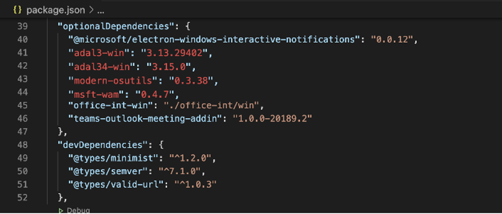
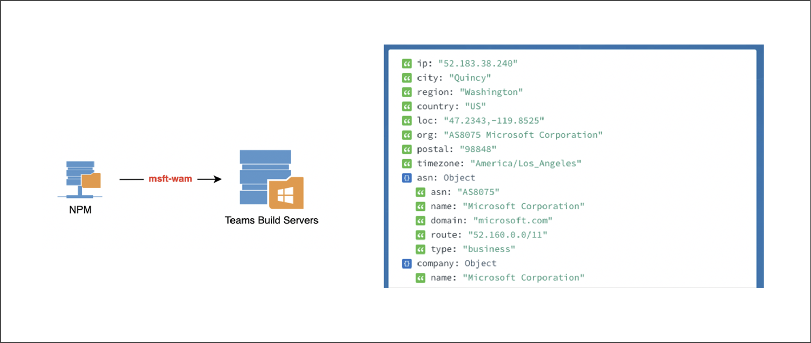
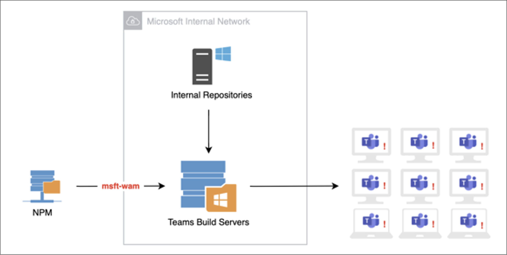
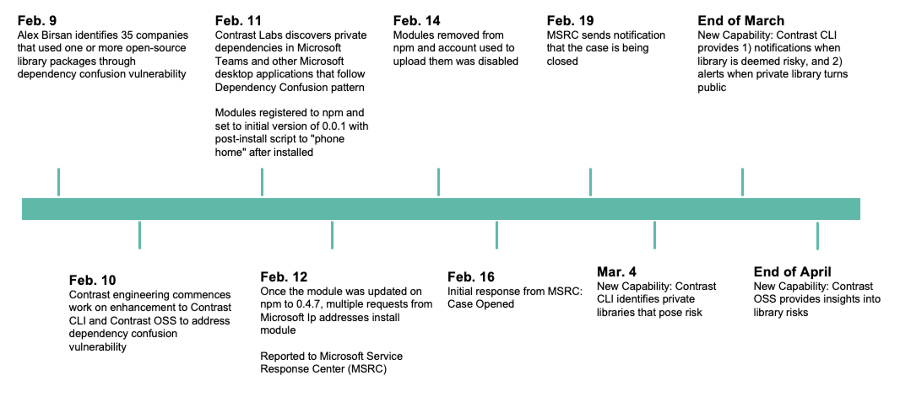

Contrast Labs Reveals Dependency Confusion Vulnerability in Microsoft Teams
When the COVID-19 pandemic forced a large percentage of the world’s office workers to begin working remotely a year ago, organizations were forced to scramble to greatly accelerate their digital transformation. Deployments that may have been planned for years in the future suddenly had to be pulled off in a matter of weeks and days—all because of a sudden change in the way people work.
Teleconferencing and collaboration tools were one key area that required swift action. Such tools had already been growing in importance in businesses of all types, but when offices closed, they became indispensable. Microsoft Teams was one of the tools that kept professionals—and the global economy— going at full speed during the pandemic. It is no wonder that the number of daily average users (DAU) on that application increased from 44 million in April 2020 to 75 million the following month.
By December, Microsoft announced that Teams had reached 115 million DAU — a 260% increase over nine months. At the same time, the company reported that Microsoft 365 users around the world were spending 30 billion minutes per day collaborating with colleagues using Teams. This astounding statistic reflects both the large number of new users and increased usage by longtime customers—one consequence of a largely home-based workforce.
These numbers make it abundantly clear that Teams has become a critical tool for many businesses, nonprofits, and government agencies. Organizations that use Teams should be aware of the dependency confusion vulnerability that I recently discovered in that application and reported to Microsoft. Fortunately, Microsoft has already taken steps to deal with the specific issue I identified. But given the number of similar vulnerabilities that have been discovered over the past few weeks, it is clear that dependency confusion is a common problem across the industry.
Dependency Confusion Research Uncovers New Vulnerabilities
First, a little background. As I described in a recent blog post, security researcher Alex Birsan used dependency confusion attacks to push harmless proof-of-concept (POC) code to internal application development builds at more than 35 technology companies. Needless to say, his research generated significant buzz in the development and application security communities when it was published. The fact that he was able to infiltrate the software factories at some of the world’s most technologically advanced companies should give pause to any organization that uses software.
Dependency confusion involves the creation of packages on third-party libraries that have identical names to packages stored in a company’s internal repository. The goal is to trick developers and automated systems into using the wrong library because of defaults configured into package managers that show a preference for external libraries over internal ones.
While it should be difficult for external users—whether bad actors, legitimate developers, or security researchers—to even find the names of packages stored in internal repositories, Birsan was able to find the names of these packages in the applications themselves—and was able to replicate that accomplishment over at least 35 applications.
Since Birsan’s research was published, multiple reports of bad actors using the technique have started to appear. In addition, other security researchers, including myself, began exploring various Software-as-a-Service (SaaS)-based applications to see if we could find dependency confusion vulnerabilities that could be exploited by attackers.
My Research on Microsoft Teams
A member of the Contrast Labs team, I specialize in security research on applications created with the Electron framework, including Microsoft Teams. Previously, I have discovered and reported several remote code execution vulnerabilities in that application. Given my background, I decided to contribute to the effort by examining Teams to see if I could identify a dependency confusion vulnerability.
Optional Dependencies Provide an Opening
I began by looking at the dependencies used by the Teams desktop application. In one section of the application, I saw a node.js package called “Optional Dependencies.” Typically, the intent of optional dependencies is to provide a place to store binary files that are a part of the testing suite, but not the production application.
The interesting thing about optional dependencies is that if they do not exist in the repository from which a developer is trying to pull them, the build will fail silently. Thus, developers must write code that is relatively defensive when optional dependencies exist. Specifically, one cannot “depend” on a dependency that is optional.
Inside the Teams desktop application is a package file that lists the dependencies that the application needed in order to be built. When one downloads and installs the application, it does not reach out to the dependency managers. This is because every part of the application is built on a Microsoft server somewhere, after which it is shipped to customers.
Now back to what I discovered. When analyzing the package, I noticed a number of modules in both public and private repositories. I also saw that some of the private packages were not taking advantage of the scoping capability provided by npm. I noted that some of the optional dependencies did not exist on disk inside the package itself. This means that during the build process those dependencies would not be found in any repository—public or private. By design, these optional dependencies failed silently whenever the application attempted to pull them from both the public and private repositories.
My Probe Gets a Response
I then selected one of the modules that was listed as an “optional dependency” and registered it on npm, setting the version to 0.0.1. I added a simple line of code in the install script of the package to alert me when it was installed. Once I was ready to deploy, I set the version of the module to match the version number from the application. At this point, I had two choices: bump the version number up by one and wait for Microsoft to update and pull in the new version, or keep it at the current version and hope that a build server would pull in a fresh copy of it (not using packagelock.json).
There are risks either way, but I decided to do what would be least impactful—keeping the version number the same. As soon as I set one of the dependencies to a high enough version, I started getting requests from the module being installed from a number of internal Microsoft IP addresses. The name of the module was relatively generic, but it was Microsoft-specific and not an overly common word.
I happened to be doing this research late at night. Based on that and other factors, I deduced that the responses were most likely from internal, automated resources within Microsoft that were pulling the dependencies and installing them—perhaps an automated continuous integration/continuous deployment (CI/CD) server. But it could also have been a live developer working a late shift in the U.S. or a daytime shift somewhere overseas.
The Risk Posed By This Vulnerability
Whether the responses I saw were automated or manual, the fact that I was able to generate this reaction poses significant risk. By taking advantage of the post-install script, I was able to execute code in whatever environment this was being installed on. If attackers were to execute code the way I did on a build server for a desktop application update that was about to be distributed, they could insert anything they wanted into that update, and that code would go out to every desktop using Teams—more than 115 million machines. Such an attack could have monumental repercussions, potentially affecting as many organizations as the massive attack on the SolarWinds software factory that was revealed in December.
And the risk of this vulnerability may not be limited to Microsoft Teams. The fact that this package is stored in an internal repository means that it is likely used in any number of other Microsoft products. If the code in question were only a part of the Teams desktop application, it would likely be simply added to the software as custom code rather than being stored in an internal repository. As an example, the specific module used in this case is also used by Skype, which could potentially fall victim to the same kind of attack.
Protecting the Software Supply Chain
The research findings described here highlight the need for organizations to take the entire software supply chain into account when designing an application security strategy. The need to protect internally developed applications—and the third-party libraries that comprise so much of their code base these days—may seem obvious. And the importance of securing and properly configuring the developer tools used to build that software is becoming more apparent as vulnerabilities like dependency confusion are revealed.
But the software supply chain does not end with the internal software factory. The potential vulnerability that I discovered in Microsoft Teams is a reminder that an organization’s application security strategy must extend to include off-the-shelf applications that every organization uses for vital business functions. Microsoft customers using the Teams desktop application have no control over how that software is produced, but they must be prepared for instances when it may be compromised.
The Story Continues
I submitted this vulnerability to Microsoft late in the day on February 12—the Friday before a holiday weekend. Since my submission, I have received feedback from Microsoft that the packages we viewed as “at risk” were removed—or more specifically “unpublished by npm-support.” (It should be noted that Microsoft owns GitHub, which owns npm.) This means that these specific packages no longer pose a risk to Microsoft and its customers. As a result of these actions, Microsoft closed the issue as a “No Fix.” However, Microsoft has yet to give us any information around their internal investigations around their actual risk.
Working on bug bounties is a regular part of what my team and I do at Contrast Labs. I personally derive a lot of enjoyment from doing security research. It keeps me sharp and helps keep me up with the tactics of cyber criminals. In particular, since we use a lot of SaaS applications internally at Contrast, it helps our organization as much as it helps others.
For More Information
For more information on newly discovered dependency confusion vulnerabilities impacting the software factories at numerous companies, read my earlier blog, “Dependency Confusion: A New Third-Party Risk for the Software Factory”.
Readers also may want to check out the webinar, “How Dependency Confusion Poses a Serious Risk in the Software Supply Chain”, and my interview for the Inside AppSec Podcast, “Contrast Labs Researcher Finds Dependency Confusion Vulnerability in Microsoft Teams”.